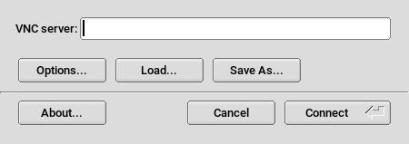

Chapter 14. Remote graphical sessions with VNC
14.1. The vncviewer client
To connect to a VNC service provided by a server, a client is needed. The default
in SUSE Linux Enterprise Server is vncviewer, provided by the tigervnc package.
14.1.1. Connecting using the vncviewer CLI
To start your VNC viewer and initiate a session with the server, use the command:
>vncviewer jupiter.example.com:1Instead of the VNC display number you can also specify the port number with two colons:
>vncviewer jupiter.example.com::5901The actual display or port number you specify in the VNC client must be the same as the display or port number selected when configuring a VNC server on the target machine. See the section called “Configuring persistent VNC server sessions” for further info.
14.1.2. Connecting using the vncviewer GUI
When running vncviewer without specifying --listen or a host to connect to, it shows a window asking for connection details. Enter the
host into the field like in the section called “Connecting using the vncviewer CLI” and click .

14.1.3. Notification of unencrypted connections
The VNC protocol supports different kinds of encrypted connections, not to be confused
with password authentication. If a connection does not use TLS, the text (Connection not encrypted!)
can be seen in the window title of the VNC viewer.